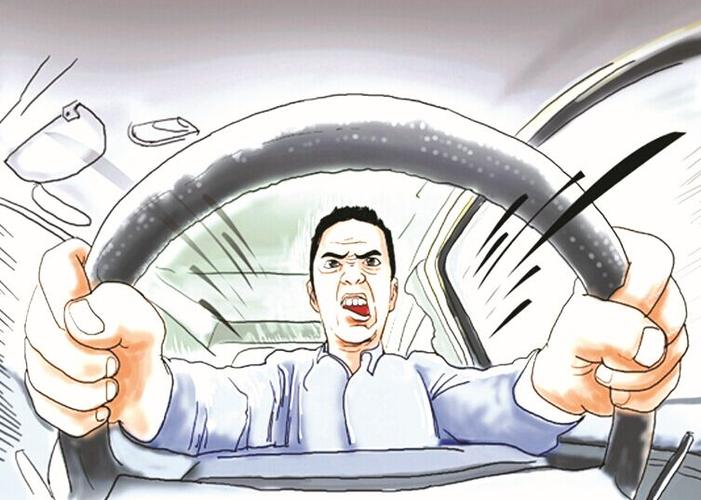
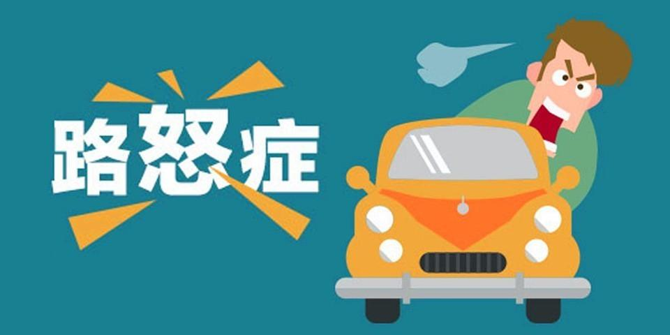
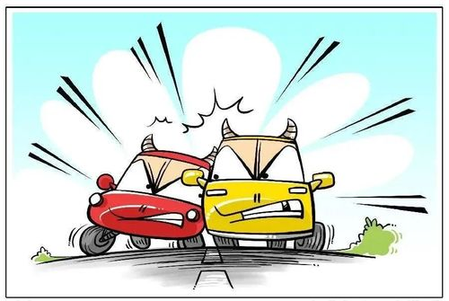

概念

我们都知道开车会给人压力。前一分钟你在处理自己的事，下一分钟可能就被人超车了。这种驾驶行为可能会令人生气恼火，但对我们中的一些人来说，它可能会令其怒不可遏。那什么是“路怒症”呢，又是如何产生的呢？
We all know driving can be stressful. One minute you’re minding your own business and the next someone cuts you up. Manoeuvres like that can be annoying and irritating, but for some of us, it can make us incandescent with rage. So what is road rage, and what things can cause it?

简单来说，“路怒症”就是驾车者对别的司机、骑自行车者或是行人所做事情突然爆发的愤怒。“路怒症”可以通过几种方式表现出来，包括口头或身体威胁、侮辱和危险驾驶。司机自己可能会感到焦虑和压力，这可能会导致他们超速或急转弯。专家警告说，经历这些时候，特别是反复经历，会导致进入我们身体的压力激素增加，并对我们的健康有害。
Road rage, simply put, is a sudden burst of anger that motorists experience when they feel angered by something another driver, cyclist or pedestrian has done. Road rage can manifest itself in several ways, including verbal or physical threats, insults, and even dangerous driving. The drivers themselves may feel anxiety and stress, which can cause them to speed or swerve across the road. Experts warn that experiencing these moments, especially repeatedly, could be harmful to our health due to the number of stress hormones entering our bodies.
